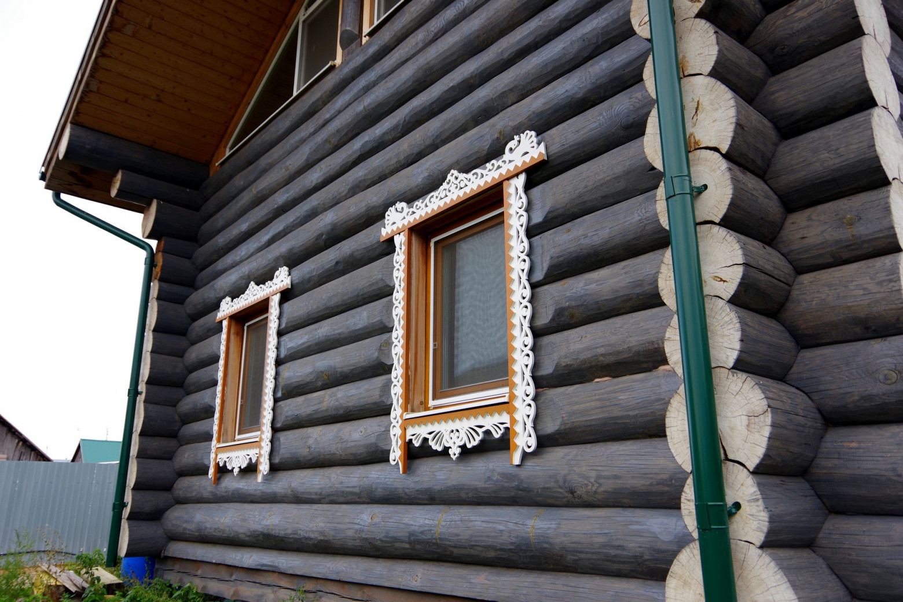

Мне периодически попадаются на Хабре статьи про постройку дома (https://habr.com/ru/post/547010/, https://habr.com/ru/post/425899/), поэтому я тоже решил
поделиться с читателями опытом. Вот такой дом из бревна строится у нас в деревне:

Для электроснабжения выбрали открытую проводку на витом кабеле и изоляторах, чтобы упростить монтаж, учесть меры безопасности, и сохранить деревенский ретро-стиль. Под катом — кратко о производителях винтажной проводки, о критериях выбора и особенностях монтажа. Мы изучили форумы, посмотрели уже построенные дома и определились со списком того, что потребуется кроме провода:
Большая часть подобных изделий производится из металла, керамики и негорючего пластика. Основная масса
поставщиков продает винтажную электрику и кабель оптом в интернет-магазины и розничные точки, поэтому с заказом
и выбором проблем нет. Варианты исполнения – на любой кошелек и вкус.
Есть даже стилизация под хохлому или гжель для любителей.
Цена в рознице за погонный метр провода составляет 100-300 рублей в зависимости от производителя, сечения и числа жил. На сайтах производителей размещены сертификаты, каталоги коллекций и варианты цветов. Кратко о компаниях – ниже.
Производится в России. Из материалов не только металл (латунь), фарфор, но и другие,
например, тайский дуб.
https://salvador-electro.ru
Производится в Швеции. Полный набор: розетки, переключатели, выключатели,
распределительные коробки и изоляторы. Около десятка цветовых решений. Есть из чего выбрать
https://werkel.ru/
Тоже отечественное производство. Как и у представленных выше, продукция
сертифицирована, имеется внутренняя система качества, а изделия проходят обязательную проверку и
собираются вручную. Подкупает большой выбор цветов кабеля – целых 28.
https://edisonelectro.ru/
Рядом со строящимся домом пока стоит старая деревянная «избушка» с двумя печками, низкими потолками, маленькими окошками и древней «плетенкой». Разница строений внутри и снаружи – колоссальная.
В новом доме совершенно другая атмосфера: запахи свежего дерева, уют, много света и воздуха. В таком уже хочется жить! А после того, как в помещениях появятся мебель и техника – будет совсем красота.
Буду рад комментариям и вопросам.